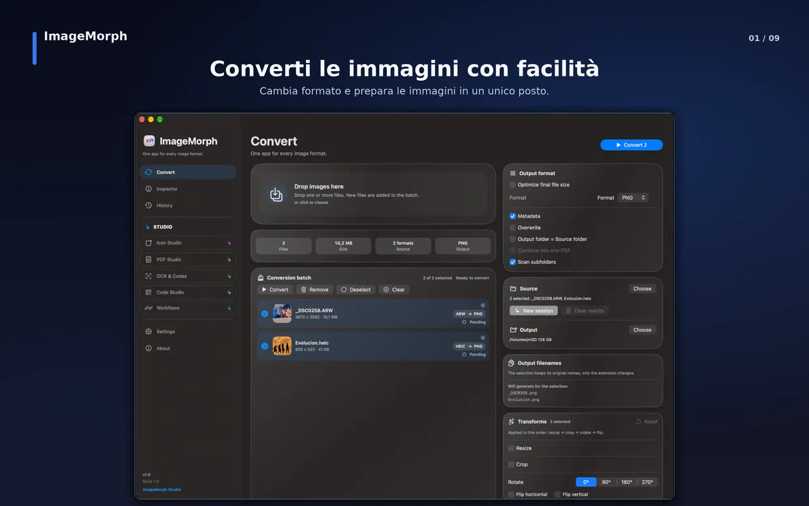
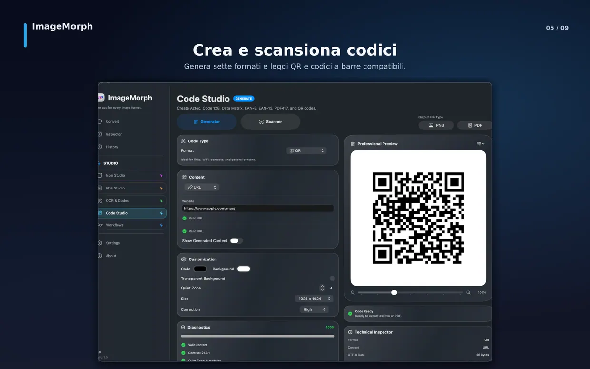
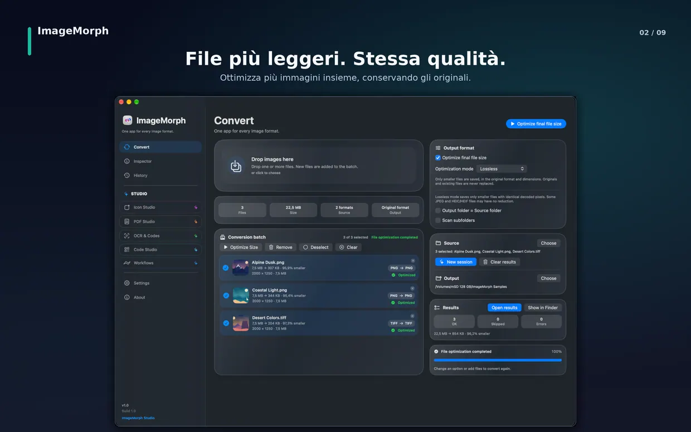
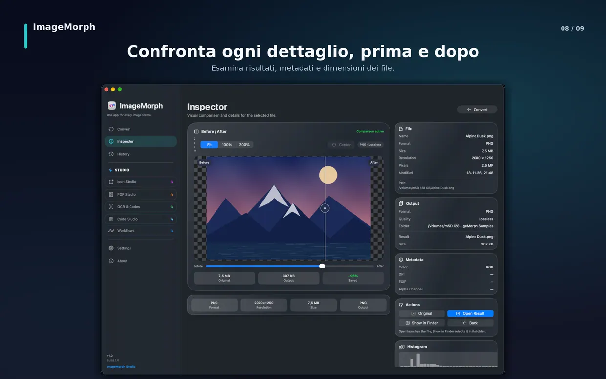
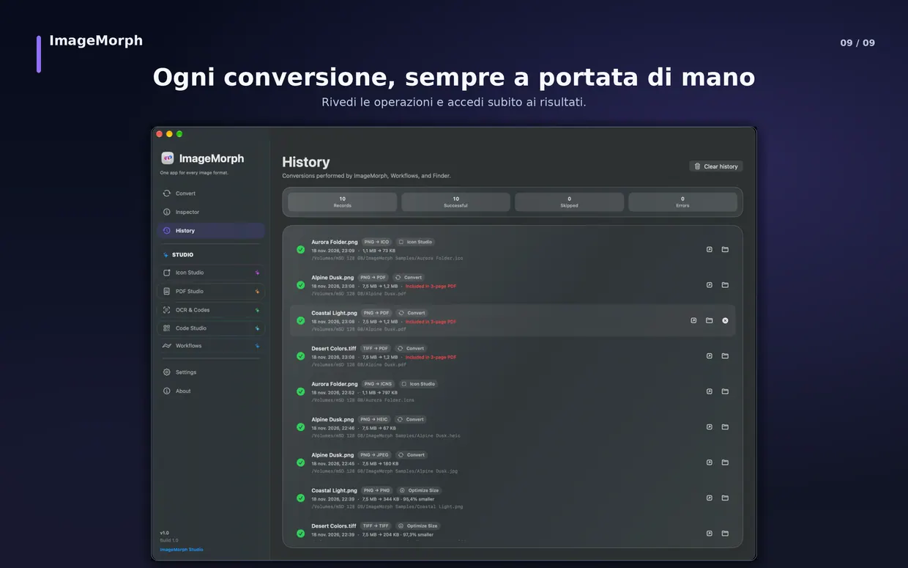
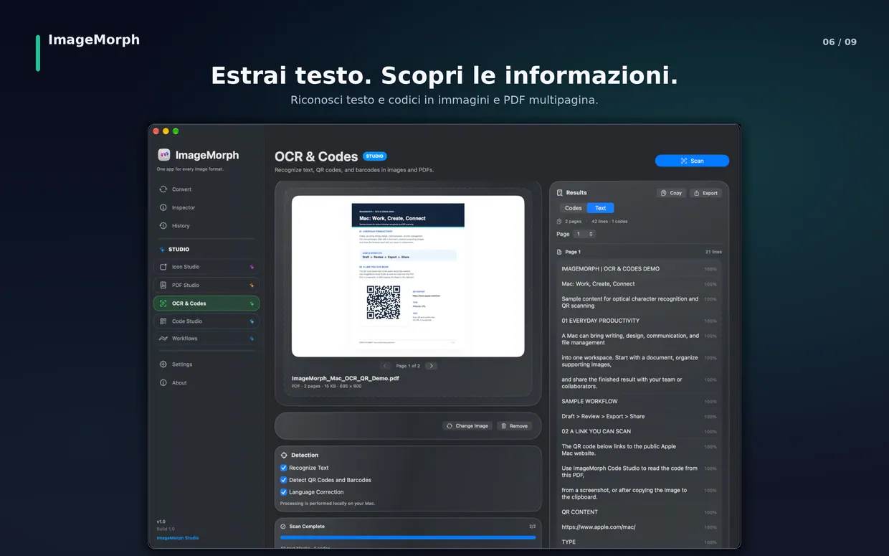
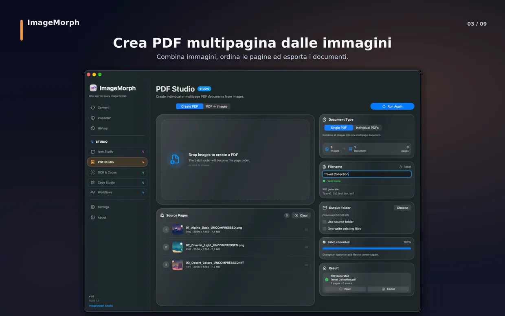
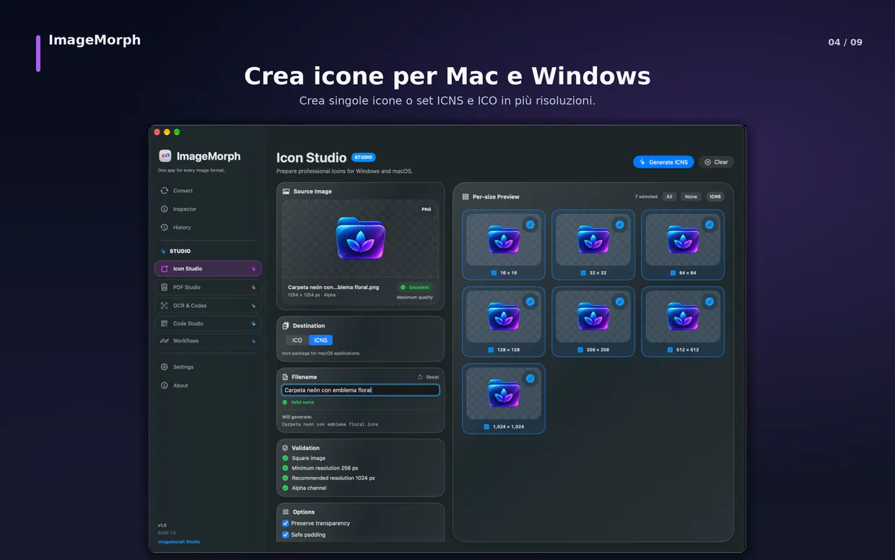
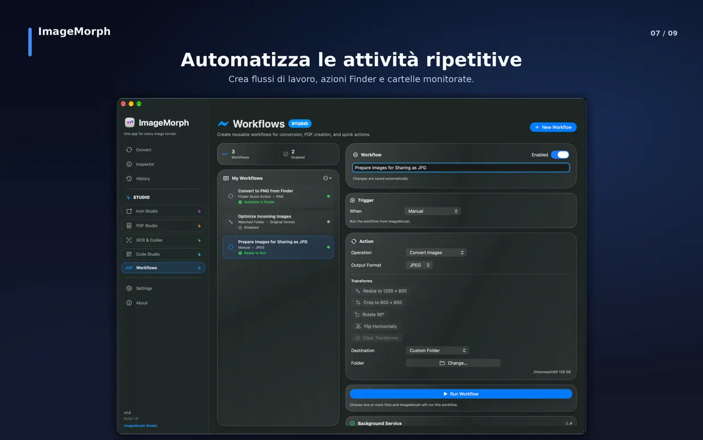

JPEG · PNG · HEIC · TIFF
JPEG, PNG, HEIC e TIFF singolarmente o in lotti.

Converti, ridimensiona e ottimizza immagini. Crea PDF e automatizza le attività ripetitive sul Mac.
Lancio sul Mac App Store in preparazione.

Converti, ridimensiona e ottimizza immagini. Crea PDF e automatizza le attività ripetitive sul Mac.

Riconosci testo in immagini e PDF multipagina; verifica ed esporta i risultati.
Leggi sul Mac i QR ricevuti via e-mail o nei PDF e controlla l’indirizzo di destinazione prima di aprirlo.


L’anteprima di un URL non garantisce che il sito sia sicuro. Verifica il dominio e non inserire dati personali in siti inattesi.
Esplora strumenti per codiciJPEG, PNG, HEIC e TIFF singolarmente o in lotti.

Modifica dimensioni e proporzioni delle immagini per diversi utilizzi, mantenendo le proporzioni originali quando necessario.

Ottimizzazione senza perdita o con perdita quando supportata; output solo se più piccolo.

Controlla formato, dimensioni e metadati. Dopo la conversione, confronta il risultato con l’originale.

Rivedi le operazioni e apri i file prodotti o visualizzali nel Finder, se esistono ancora.

Studio riunisce OCR, lettura dei codici, strumenti PDF, icone e automazione. Acquisto unico, nessun abbonamento.
Studio è un acquisto in-app facoltativo e permanente.

Riconosci testo in immagini e PDF multipagina; verifica ed esporta i risultati.


Leggi codici da appunti, immagini, PDF o cartelle, oppure acquisiscili con fotocamere e scanner compatibili. Controlla contenuti e link prima di aprirli.


Crea PDF multipagina, esporta pagine come immagini e regola selezione e rotazione.

Genera ICO e ICNS e verifica le dimensioni prima dell’esportazione.


Crea QR, Code128, Data Matrix, EAN, PDF417 e Aztec in PNG o PDF.

Salva flussi di lavoro, monitora cartelle e avvia azioni da Finder.

| Funzione | Free | Studio |
|---|---|---|
| Conversione, dimensioni, ottimizzazione | Incluso | Incluso |
| Coda, Inspector, confronto, istogramma | Incluso | Incluso |
| Creazione PDF di base | Incluso | Incluso |
| PDF Studio ed esportazione pagine | — | Incluso |
| OCR e riconoscimento codici | — | Incluso |
| Generazione codici e acquisizione camera/scanner | — | Incluso |
| Set ICO e ICNS | — | Incluso |
| Flussi, cartelle monitorate, azioni rapide Finder | — | Incluso |
Prezzo locale, accesso Studio e idoneità alla prova sono mostrati nell’app. Acquisti e ripristini usano i servizi Apple.
Conversione, ottimizzazione, creazione di PDF e OCR avvengono sul Mac. Il contenuto dei file non viene inviato al servizio di prova Studio. Per accedere a file, cartelle, fotocamere e scanner servono permessi; impostazioni, cronologia, segnalibri e registri con nomi, percorsi ed errori possono restare in locale.
Leggi l’informativa sulla privacy